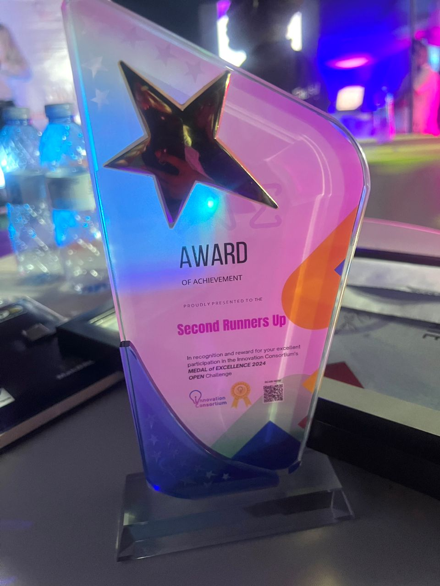

Bridging Health
HemoSave
The HemoSave device mitigates human errors associated with visually estimating blood losse during C-section deliveries in LMIC hospitals. To get an accurate measurement of blood loss, two mechanisms must be involved: (1) collection of fluid during delivery and (2) determination of the fraction of blood within the recovered fluid. Designed for medical professionals to use in the operating room, a healthcare worker operates the device by aspirating as much blood and amniotic fluid as possible from the area around the incision in a C-section surgery. The fluids are then stored in a 3-liter container and weighed.
About Us
Baini Technologies Limited is a wonderful group of engineers from Makerere University and Duke University. The HemoSave project began in the summer of 2023 in an effort to reduce postpartum morbidity through engineering. Our team grew throughout 2024, and, in 2025, Baini Technologies was founded to catapault the HemoSave device to greater heights.
Our Team
John Doe - CEO
Jane Smith - CTO
Mike Brown - Lead Engineer
Sarah Lee - Designer
Alex Kim - Developer
Emma Wilson - Marketing
News & Updates
The runner up trophy awarded to Samantha of the HemoSave team at the Medal of Excellence 2024 Open Challenge, hosted by the Innovation Consortium of Uganda.
Samantha, Desmond, and Haasini attended the Winter 2025 VentureWell E-Team Pioneer Workshop in Baltimore to present our work on the HemoSave Device and meet other medtech innovators.